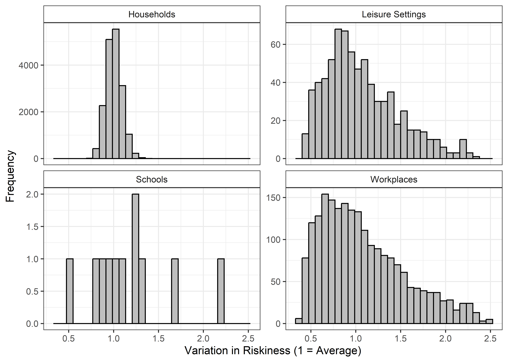
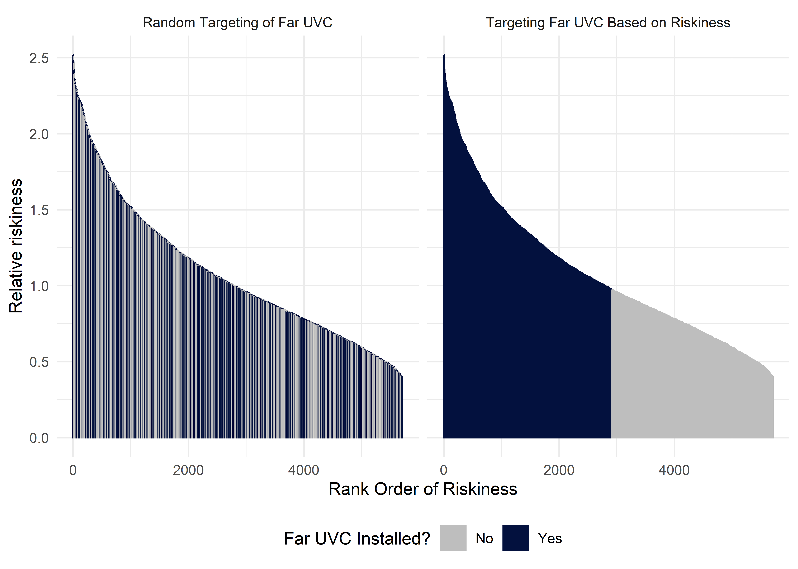
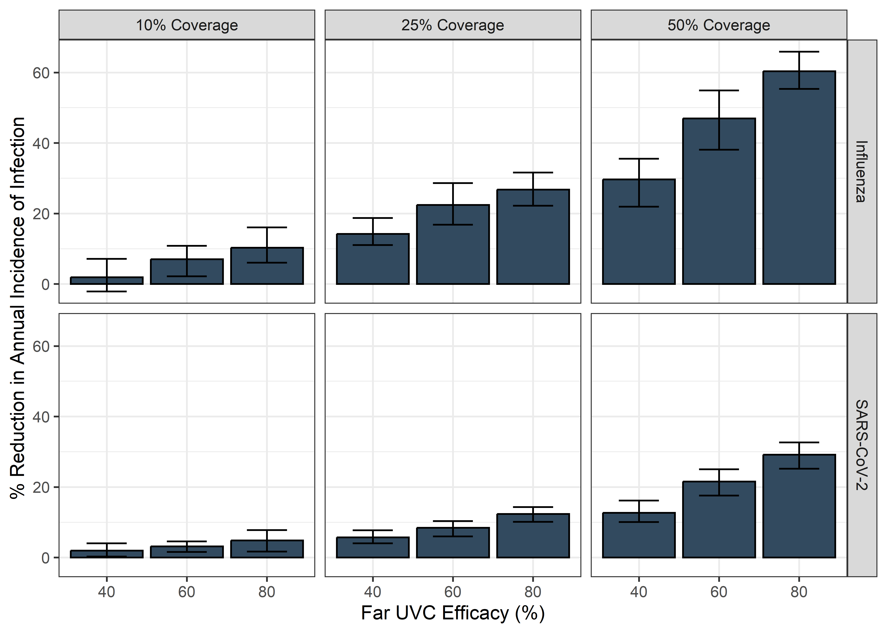
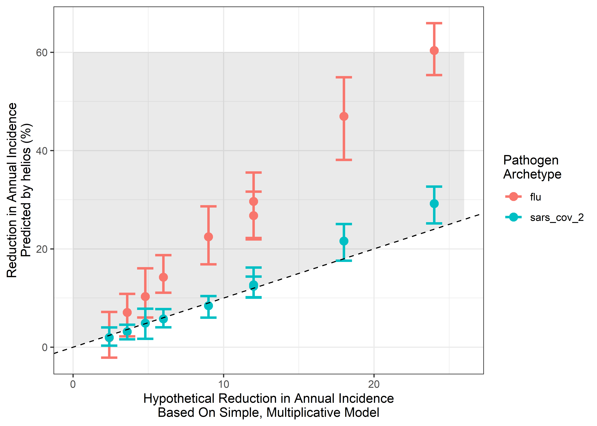
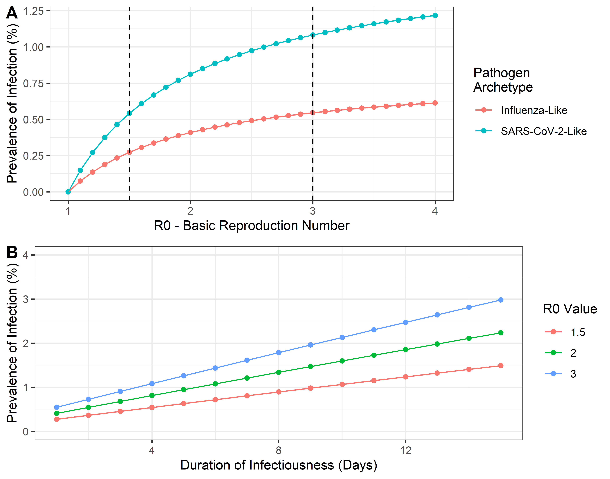
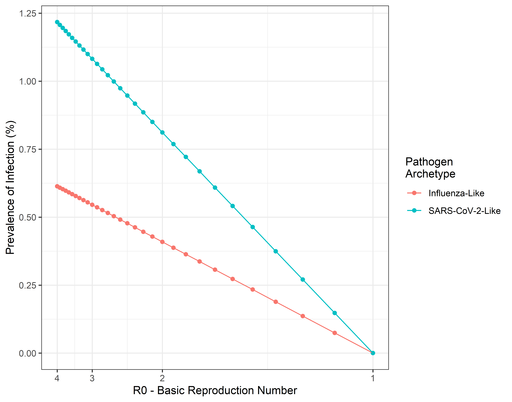

The Impact of Far UVC Interventions on the Burden of a Respiratory Virus
Charlie Whittaker1, Tom Brewer2, Adam Howes3
September 2024
Source:vignettes/blueprint-final-report-TB.Rmd
blueprint-final-report-TB.RmdOverview
In our initial report we introduced helios: an individual-based modelling framework for exploring the impact that installation of far UVC could have on the transmission and burden of respiratory infections. In a follow-up report, we presented updates to that framework and a series of analyses evaluating the impact that the installation of far UVC in non-household settings could have on the burden of endemic respiratory pathogens. In this final report, we present updates to the framework made since the last report, and a series of analyses evaluating the impact that installation of far UVC in non-household settings could have on the burden of endemic respiratory pathogens.
1 Model Changes
Two updates to the model have been made since the last report. These are:
- Explicitly representing the physical area of the locations we are modelling (rather than just the number of people the location hosts). (Section 1.1)
- Adding in the option to assign far UVC to the riskiest locations (rather than assigning it to locations at random, independently of riskiness). (Section 1.2)
1.1 Explicitly representing the square meterage of each location
Previously, the modelling framework used the number of individuals occupying the location as a proxy for the size of the location. This approach makes the implicit and unrealistic assumption that all Setting Types (i.e. schools, workplaces, leisure settings and households) have the same occupant density.
In response to this, we have updated the modelling framework to include occupant densities specific to each Setting Type, with these occupant densities selected to match those used for the calculation of transmission riskiness variation described in the previous report, which were:
Households: 20m2 per person (5 people per 100m2, per ANSI/ASHRA Standard 62.1 Table 6.1)
Workplace: 10m2 per person (10 people per 100m2)
Schools: 3.33m2 per person(30 people per 100m2)
Leisure: 2m2 per person(50 people per 100m2)
Note that an assumption remaining here is that all Locations of a particular Setting Type (e.g. Schools) have the same assumed occupancy density. The density of occupants in Locations belonging to each Setting Type is therefore the same, but the overall area for each Location differs depending on the number of individuals who occupy that particular Location.
1.2 Targeting far UVC to locations based on riskiness
In a previous report, we incorporated variation in riskiness between Locations belonging to the same Setting Type. This variation was estimated using empirical data on variation in ventilation rates and integrating this with a transient Wells-Riley equation. Previously assigning far UVC to individual locations was either done randomly or targeted to the largest settings (by number of people they contain). In this update to the model, we have enabled targeting of far UVC to locations based on their riskiness.
As a reminder, here is what the distribution of riskiness across locations of the same Setting-Type looks like in our modelling framework Together, these imply an approximate “riskiness ratio” (the difference in riskiness between the 5th percentile risky and 95th percentile risky) of 2.5x for Households, 5.5x for Leisure locations, 4.75x for Schools and 6.35x for Workplaces:

Figure 1.1: (ref:riskiness-exemplar)
The modelling framework is now able to accommodate targeting of far UVC in a manner based on the riskiness of a location. Below we show how assignment of far UVC works for the two targeting strategies for an example where far UVC is installed to cover 50% of total School, Workplace and Leisure location area. The two strategies are “random” (far UVC assigned randomly to locations, irrespective of their riskiness) and “targeted riskiness” (far UVC assigned to locations based on the rank ordered riskiness of each setting).

Figure 1.2: (ref:riskiness-coverage-exemplar)
2 Assessing the impact of far UVC on the burden of endemic respiratory viruses
Using the updated modelling framework described above, we conducted analyses evaluating the potential impact of far UVC deployment on the transmission and disease burden of a hypothetical respiratory virus. We considered two pathogen archetypes (described in detail below) and present analyses for both an endemic pathogen (i.e. one which is consistently present in a population and maintained at a particular baseline prevalence) and an epidemic one (i.e. one which is previously not present in the population, and which emerges to cause an epidemic).
2.1 Results
We considered two pathogen archetypes for this hypothetical virus:
“SARS-CoV-2-Like” Archetype - \(R_0\) of 2.5, a mean latent period of 2 days, a mean duration of infectiousness of 4 days.
“Influenza-Like” Archetype - \(R_0\) of 1.5, a mean latent period of 1 day, a mean duration of infectiousness of 2 days.
For the epidemic pathogen, we assume that immunity arising from infection lasts for an individual’s lifetime. Endemicity arises (in part) due to the finite nature of immunity arising from infection with a pathogen. For the endemic pathogen, we therefore assume a mean duration of immunity of 365 days. This gives an approximate infection prevalence of 1% for SARS-CoV-2 (i.e. approximately 1 in 100 individuals are infected at any given timepoint) and 0.3% for influenza (i.e. 1 in 330 individuals infected at any given timepoint).
For each pathogen archetype, we investigated the effect of far UVC efficacy and far UVC coverage on the annual incidence of infection, varying:
far UVC Coverage: Between 0% and 80%, in increments of 10%. In all cases, far UVC was assumed to be installed in schools, workplaces and leisure locations only (i.e. not households), either at a random set of locations or based on their riskiness.
far UVC Efficacy: Either 40%, 60% or 80%, with the assumption that far UVC efficacy was identical across all Settings and Locations where it had been installed.
All presented results are based on summary statistics (e.g. mean, range etc) calculated based on 20 stochastic replicates.
2.1.1 Epidemic Pathogen Analyses
The results of analyses examining the impact of far UVC installation on an epidemic pathogen are presented in figures 2.1, Figure 2.2, and Figure 2.3. We consider three metrics to evaluate the impact of far UVC in the case of an epidemic pathogen. The first is the number of infected individuals at the peak of transmission (hereafter referred to as “peak size”, see Figure 2.1); the second is the timing of this peak (hereafter referred to as “peak timing”), see Figure 2.2; and the third is the total number of individuals infected over the course of the epidemic (hereafter referred to as “final epidemic size”, see Figure 2.3.
2.1.1.1 Epidemic Peak Size
Figure 2.1 shows the impact of far UVC deployment on the peak size of the simulated epidemic. For the “influenza-like” pathogen and random coverage, increasing far UVC coverage from 10% to 50% and the efficacy from 40% to 80% reduced the mean final epidemic size from 5502 (4780-6047) to 1967 (1456-2468), while targeting coverage at the riskiest locations decreased the mean peak size from 5179 (4760-5712) to 293 (148-536) for the same parameters. For the “SARS-CoV-2-like” pathogen, doubling the efficacy from 40% to 80% and increasing the coverage from 10% to 70% decreased the peak size from 19669 (18862-21018) to 9106 (8334-10222) for random coverage and 19511 (18741 - 20610) for targeted coverage. Across all far UVC coverages, efficacies, and archetypes simulated, targeting far UVC deployment at the riskiest locations provided greater reductions in the peak epidemic size than random allocation. Increasing far UVC coverage led to progressively greater reductions in peak size, with a larger (proportional) impact on disease burden observed for an “influenza-like” pathogen than a “SARS-CoV-2-like” pathogen. Under some scenarios (e.g. \(\geq\) 60% coverage and \(\geq\) 80% efficacy, coverage targeted at riskiest settings), far UVC installation was sufficient to prevent the epidemic occurring entirely. While far UVC deployment failed to prevent an epidemic for the “SARS-CoV-2-Like” pathogen at even the highest coverage and efficacy combinations simulated, the targeted deployment of far UVC reduced the peak epidemic size up to ~60%.
![The impact of far UVC coverage type, coverage, and efficacy on the mean final epidemic size per 1000 individuals, defined as the maximum total number of recovered individuals in the population averaged across 25 stochastic model simulations, for influenza-like and SARs-CoV-2-like pathogens. The light blue lines represent simulations where was far UVC deployed at random, and the dark blue lines simulations where far UVC was targeted at the riskiest settings. The ribbons show minimum and maximum values across 25 stochastic replicates for each parameter set.](blueprint-final-report-TB_files/figure-html/epidemic-peak-size-1.png)
Figure 2.1: The impact of far UVC coverage type, coverage, and efficacy on the mean final epidemic size per 1000 individuals, defined as the maximum total number of recovered individuals in the population averaged across 25 stochastic model simulations, for influenza-like and SARs-CoV-2-like pathogens. The light blue lines represent simulations where was far UVC deployed at random, and the dark blue lines simulations where far UVC was targeted at the riskiest settings. The ribbons show minimum and maximum values across 25 stochastic replicates for each parameter set.
2.1.1.2 Epidemic Peak Timing
Figure 2.2 shows the impact of far UVC deployment on the timing of the epidemic peak. The deployment of far UVC increased the time taken for the epidemic peak timing for both the “influnza-like” and the “SARS-CoV-2-like” pathogens. Increasing far UVC coverage and/or efficacy increased the epidemic peak time. Increasing targeted far UVC efficacy from 40% to 80% and the coverage from 10% to 50% for the “influenza-like” pathogen increased the peak time from 138 days (131-154) to 395 days (233-834), while increasing far UVC efficacy from 40% to 80% and the coverage from 10% to 70% increased the peak time from 109 days (106-116) to 195 days (180-218) for the SARS-CoV-2-like pathogen. Targeting far UVC coverage at the riskiest settings provided greater delays in epidemic peak timing relative to the random allocation of far UVC across all combinations of efficacy and coverage, with the difference in epidemic peak time between targeted and random coverage types increasing with both far UVC coverage and efficacy. The peak time observed for the “influenza-like” pathogen decreased rapidly at 80% efficacy when coverage > 50%, as far UVC prevented the epidemic from occurring (Figure 2.1).
![The impact of far UVC coverage type, coverage, and efficacy on the mean number of days until the peak of the epidemic wave (in days), defined as the average timestep on which the number of infected individuals in the population peaked across 25 stochastic simulations for each parameterisation, for influenza-like and SARs-CoV-2-like pathogens. The light blue lines represent simulations where was far UVC deployed at random across setting-types (excluding households), and the dark blue lines simulations where far UVC was targeted at the riskiest locations across all setting types (excluding households). The ribbons show minimum and maximum values across 25 stochastic replicates for each parameter set.](blueprint-final-report-TB_files/figure-html/epidemic-peak-timing-1.png)
Figure 2.2: The impact of far UVC coverage type, coverage, and efficacy on the mean number of days until the peak of the epidemic wave (in days), defined as the average timestep on which the number of infected individuals in the population peaked across 25 stochastic simulations for each parameterisation, for influenza-like and SARs-CoV-2-like pathogens. The light blue lines represent simulations where was far UVC deployed at random across setting-types (excluding households), and the dark blue lines simulations where far UVC was targeted at the riskiest locations across all setting types (excluding households). The ribbons show minimum and maximum values across 25 stochastic replicates for each parameter set.
2.1.1.3 Epidemic Final Size
Figure 2.3 shows the impact of far UVC deployment on the final size of the simulated epidemics. For the “influenza-like” pathogen, far UVC deployment provided substantial reductions in the final epidemic size. Increasing both far UVC coverage and efficacy resulted in substantial reductions in final epidemic size, and targeting far UVC deployment in the riskiest locations provided notable reductions in final epidemic size across all simulated parameter combinations. The reductions in final epidemic size observed for the “SARS-CoV-2” like pathogen were more moderate than for the “influenza-like” pathogen, and targeted far UVC coverage only provided reductions in epidemic final size for the “SARS-CoV-2” like pathogen only when efficacy \(\geq\) 60% and coverage \(\geq\) 30%.
![The impact of far UVC coverage type, coverage, and efficacy on the mean final epidemic size per 1000 individuals, defined as the average maximum total number of recovered individuals in the population across 25 stochastic simulation runs for each parameterisation, for influenza-like and SARs-CoV-2-like pathogens. The light blue lines represent simulations where was far UVC deployed at random, and the dark blue lines simulations where far UVC was targeted at the riskiest settings. The ribbons show minimum and maximum values across 25 stochastic replicates for each parameter set.](blueprint-final-report-TB_files/figure-html/epidemic-final-size-1.png)
Figure 2.3: The impact of far UVC coverage type, coverage, and efficacy on the mean final epidemic size per 1000 individuals, defined as the average maximum total number of recovered individuals in the population across 25 stochastic simulation runs for each parameterisation, for influenza-like and SARs-CoV-2-like pathogens. The light blue lines represent simulations where was far UVC deployed at random, and the dark blue lines simulations where far UVC was targeted at the riskiest settings. The ribbons show minimum and maximum values across 25 stochastic replicates for each parameter set.
2.1.1.4 Discussion
When highly efficacious and/or installed at high coverage, the deployment of far UVC provided substantial reductions in both the size of the epidemic, in terms of the peak number of individuals infected at any one time and the total number of individuals in the population who were infected. Targeting the deployment of far UVC towards the riskiest locations provided additional reductions in epidemic size and speed, but appreciable improvements were also observed when far UVC was installed at random and reductions in performance relative to targeted deployment could generally be overcome with increased efficacy and coverage. Far UVC deployment typically had a greater relative impact on the control of an “influenza-like” pathogen than the “SARS-CoV-2-like” pathogen.
For the low \(R0\) pathogen, the targeted installation of far UVC at very high coverage and efficacy (\(\geq\) 80%) achieved complete suppression of the epidemic (i.e. reduced R < 1 and prevented the pathogen from spreading from low initial frequency). However, far UVC provided significant value in the epidemic scenarios even when it does not achieve complete suppression of the epidemic. Reductions in transmission that fall short of full suppression arising from far UVC can still reduce the associated pressure on healthcare systems by reducing the peak size (and therefore burden) on the healthcare system, and spreading that burden out over time - the so-called “flattening of the curve”). Delaying the epidemic peak also provides more time for other medical countermeasures, such as vaccines, to be developed. Furthermore, for the same disease burden, flattening the curve enables shorter and less stringent non-pharmaceutical interventions to be implemented relative to scenarios in which far UVC is not available. However, it is important to recognise that the epidemic simulations did not consider imported infections from external locations, which typically sustain an epidemic, and could increase the intensity of the far UVC deployment required to prevent an epidemic from occurring, or erode the capacity of far UVC to prevent an epidemic entirely.
The increased impact of far UVC on the “influenza-like” when compared to the “SARS-CoV-2-like” pathogen occurs because the former has a lower starting R0. As the initial R0 of the pathogen increases, the non-linear nature of the fraction of transmission you have to avert to reduce the R below 1 increasingly reduces the impact of far UVC on the epidemic outbreak.
2.1.2 Endemic Pathogen Analyses
The results of analyses examining the impact of far UVC installation on an epidemic pathogen are presented in Figure Figure 2.4. We consider a single metric for evaluating the impact of far UVC on the endemic pathogen. This is the total estimated annual incidence of new infections with the pathogen.
We estimate that far UVC installation would have a larger (proportional) impact on disease burden for an “Influenza-Like” pathogen than a “SARS-CoV-2-Like” pathogen; and that increasing far UVC coverage and/or increasing far UVC efficacy leads to increased impact. Assuming A% coverage and B% efficacy, far UVC installation led to a C% (range D%-E%) reduction in annual infection incidence for “Influenza-Like” and F% (range G%-H%) for “SARS-CoV-2-Like”. At I% coverage and J% assumed efficacy, these are K% (range L%-M%) and N% (range O%-P%) respectively. SOMETHING COMPARING TARGETED AND UNTARGETED APPROACHES

Figure 2.4: The impact of varying far UVC coverage and efficacy on the annual incidence of a respiratory virus, for “Influenza-Like” and “SARS-CoV-2-Like” pathogen archetypes. The bars represent the mean percentage reduction in infection incidence averaged over the 20 stochastic model simulations run for each parametrisation, with the range of % reduction in incidence across those 20 simulations shown by the error bars.
2.1.2.1 Discussion
The above results highlight:
Something here about generally higher (relative) impact on influenza than SARS-CoV-2 (because the former has a lower starting R0; and how this relates to the non-linear nature of the fraction of transmission you have to avert to reduce R0 to 1).
Something here about untargeted and targeted approaches.
An important point here is that there is significant value to far UVC in an epidemic pathogen situation, even when it does not achieve complete suppression of the epidemic (i.e. reducing R < 1 and preventing it occurring). Reductions in transmission that fall short of full suppression arising from far UVC are still useful in that they 1) reduce the associated pressure on healthcare systems (by reducing peak size and spreading burden out over time - the so-called “flattening of the curve”); 2) push the epidemic later into the future (providing more time for other medical countermeasures such as vaccines to be developed); and 3) for the same disease burden, enable shorter and less stringent non-pharmaceutical interventions to be implemented compared to a scenario in which far UVC is not available.
We next compared these results to those produced by a simplistic, static multiplicative model of estimated impact calculated by multiplying the coverage and efficacy of the modelled far UVC together and then multiplying this by the proportion of transmission that is “targetable” by far UVC (i.e. the proportion of transmission that occurs outside households). The results of this analyses are plotted below in 2.5. As you can see, this simplified model provides similar estimates to those generated by helios for SARS-CoV-2, but significantly underestimates the impact for Influenza.

Figure 2.5: Comparing the estimates of impact for helios and a simplified multiplicative model. x-axis indicates the reduction estimated by the simple model; y-axis the estimate produced by helios . Points are coloured according to pathogen archetype. Dashed line indicates the line of y = x (i.e. any points lying on that line have the same impact estimate from helios and the simplified model). Grey shaded area indicates range where the simple model predicts lower impact than helios.
2.2 Discussion
The observed differences in predicted far UVC impact between the two pathogen archetypes arise primarily because of their different \(R_0\) values. In Figure ?? we show the analytical relationship between \(R_0\) and prevalence of infection, derived for a SEIRS compartmental model (see here and here) that shares a similar representation of a disease’s natural history to helios. We note that the results presented in ?? are not results from running helios (instead they are the analytical solution of a significantly more tractable mathematical model that is simpler than but similar to helios) and are displayed here solely for the purpose of illustrating a generally-held non-linearity between transmissibility (\(R_{0}\)) and infection prevalence.
There is a non-linear influence of \(R_{0}\) on prevalence of infection (and hence disease burden). For lower values of \(R_{0}\), there is a near-linear relationship between the two quantities. At higher values of \(R_{0}\) however, infection prevalence saturates and the rate at which increasing values of \(R_0\) increases infection prevalence diminishes. When \(R_0\) is high (as for the “SARS-CoV-2-Like” archetype), small reductions in \(R_0\) (e.g. due to far UVC) will have only a slight impact on infection prevalence. By contrast, when baseline \(R_0\) is lower (as for the “Influenza-Like” archetype”), the infection prevalence will decrease more (in relative terms) for the same reduction in \(R_0\). Increasing duration of infectiousness increases the prevalence of infection in a linear manner

Figure 2.6: The relationship between \(R_0\) and the prevalence of infection at endemic equilibrium for each of the two pathogen archetypes considered here, derived mathematically for a simpler model that is similar to helios. The vertical dashed lines indicate the value of \(R_0\) used for each archetype in the analyses carried out.

Figure 2.7: The relationship between \(R_0\) and the prevalence of infection at endemic equilibrium for each of the two pathogen archetypes considered here, derived mathematically for a simpler model that is similar to helios. The vertical dashed lines indicate the value of \(R_0\) used for each archetype in the analyses carried out.